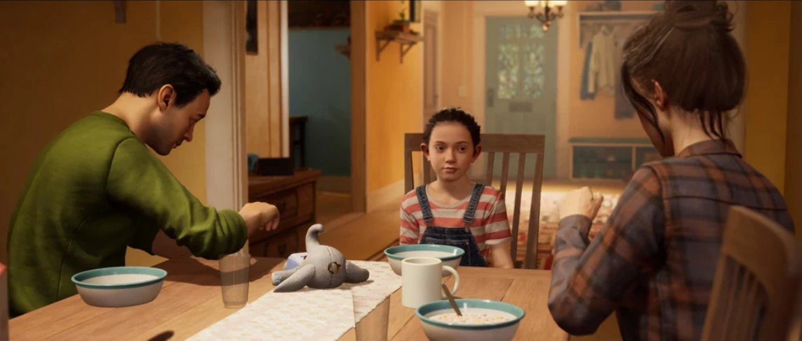
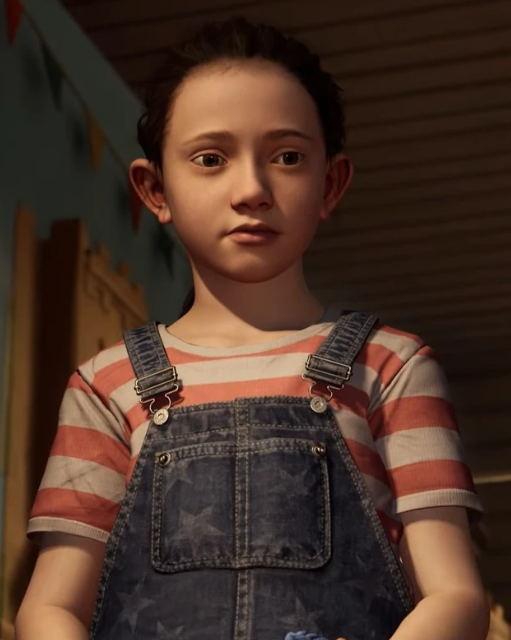

About the Game!
It Takes Two is a two-player action-adventure game, released by Hazelight in 2021. The game is centered around two characters: Cody and May. The story revolves around their complex relationship and their failing marriage, brought to their attention by their daughter, Rose. The game consists of a series of mini-quests and games, all requiring players to collaborate in order to succeed. The game tells a serious story in a fashion that is less-than-serious, allowing for the narrative to shine through the cracks, regardless of the audience. The reason I chose to analyze this game in particular was for its multiple narrative types, interesting play mechanics, and dynamic character/worldbuilding.

